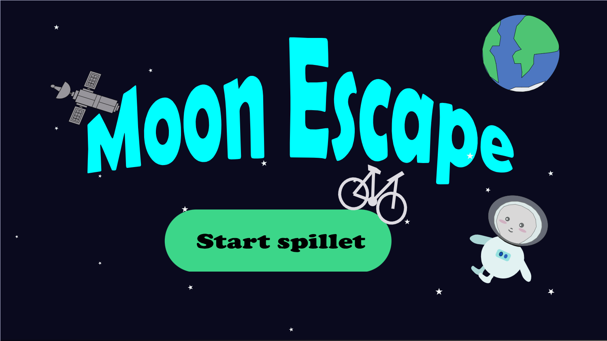

Tema 4 - Animation
Tema beskrivelse
I denne opgave skulle vi udvikle vores eget spil. Spil-strukturen skulle følge retningslinjerne, som vi fik udleveret, men ideen og designet af spillet, var op til os at bestemme. Vi blev præsenteret for javascript for første gang, og skulle prøve kræfter med functions og animationer i javascript. Vi blev også præsenteret for Adobe Illustrator og skulle bruge det til at tegne og designe alle elementer i spillet.
Konklusion på tema og opgave
En meget stor del af dette tema omhandlede dokumentation af designprocessen. Vi brugte mange udviklingsmetoder i dette tema. Til mit spil lavede jeg aktivitetsdiagram og state machine diagram. På første dag af tema 4, skulle vi ved hjælp af en øvelse skabe 6 hurtige ideer til vores spil. Vi fik et ark med en masse ord på, hvor vi derefter skulle vælge tre tilfældige, og skabe en ide ud fra det. Jeg tegnede derefter alle mine elementer og min “hovedkarakter” på papir skitser og dernæst gik jeg i gang med Adobe Illustrator for første gang.